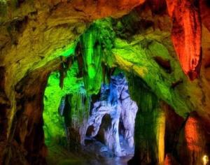
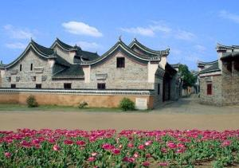
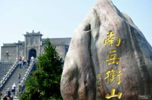
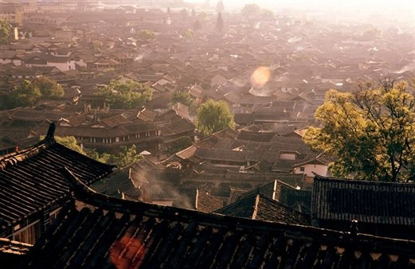

锡岩仙洞

锡岩仙洞位于衡东县荣桓镇锡岩村，南岳七十二峰之一的金觉峰东部。 西距衡东县城洣水镇30公里，东距罗荣桓故居2.5公里，自古为“楚南第一景”。
罗荣怀故居

罗荣桓元帅故居又名异公享祠，位于衡东县荣桓镇南湾村南头，建于1914年， 是罗荣桓元帅的父亲罗国理为纪念第12代先祖异山公倡建的族祠，三进四厢， 房屋20间，建筑面积530多平方米。为介绍罗荣桓光辉的一生，故居内设有陈列室， 展出珍贵文献、照片和实物150余件。1983年，故居列为省级文物保护单位， 1985年全面维修后对外开放。
南岳衡山

“南岳”是国土治域内南方的大山，在历史上或是“四岳”之一，或是后之“五岳”之一， 同其他三岳或四岳一起，最初是古代政治地理的范畴，是中原民族以其视角确定的政治国土边界气。
衡山（Mount Heng），又名南岳、寿岳、南山，为中国“五岳”之一， 位于中国湖南省中部偏东南部，绵亘于衡阳、湘潭两盆地间,， 主体部分位于衡阳市南岳区、衡山县和衡阳县东部。衡山的命名， 据战国时期《甘石星经》记载，因其位于星座二十八宿的轸星之翼， “变应玑衡”，“铨德钧物”，犹如衡器，可称天地，故名衡山。
衡山是中国著名的道教、佛教圣地，环山有寺、庙、庵、观200多处。 衡山是上古时期君王唐尧、虞舜巡疆狩猎祭祀社稷，夏禹杀马祭天地求治洪方法之地。 衡山山神是民间崇拜的火神祝融，他被黄帝委任镇守衡山，教民用火，化育万物， 死后葬于衡山赤帝峰，被当地尊称南岳圣帝。道教“三十六洞天，七十二福地”， 有四处位于衡山之中，佛祖释迦牟尼两颗真身舍利子藏于衡山南台寺金刚舍利塔中。 1982年，衡山风景区被列入第一批国家级重点风景名胜区名单；2006年2月， 衡山入选首批国家自然与文化双遗产名录；2007年5月，衡山风景区被评为首批国家5A级旅游景区； 2007年8月，衡山被列为国家级自然保护区。
